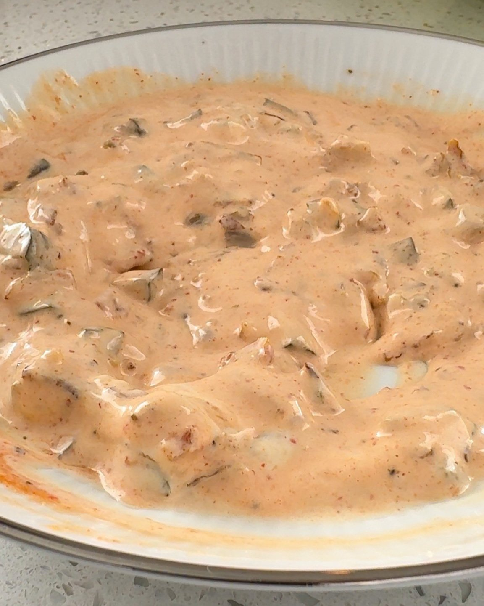
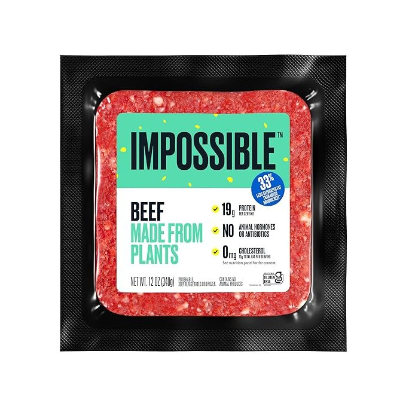

Melt the butter in a large skillet over medium-low heat.
Add the onions, and cook for about 5-8 minutes. The onions will get soft and golden, but they should not burn.
Combine the caramelized onions and all of the other ingredients together in a small bowl. Stir to combine.
Taste for seasoning.
Burgers
Separate your "beef" into four 3oz patties, and flatten them slightly.
Sprinkle both sides of the patties with salt and pepper.
Drizzle the avocado oil into a cast iron skillet and turn the heat to medium-high. Cook the patties for 2-3 minutes on each side. Use a spatula to lightly flatten the patties as they cook.
Place a slice of cheese on two of the cooked patties.
Remove the patties from the skillet and place them on a plate lined with paper towels to drain.
onions
Turn the stove down to medium-low heat, and add the four thick slices of yellow onion.
Sprinkle the top of the onions with salt and sugar.
Cook the onions for two minutes on both sides. The onions will be soft and golden on the outside.
Place a slice of cheese on two of the cooked caramelized onions.
Assembly
Place the cheese burger patties on top of the plain caramelized onions.
Stack the plain burger patties on top.
Flip the cheese onions on top, forming a burger.

INGREDIENTS
In N Out Burger Sauce
1/4 c chopped yellow onions
1 tbsp butter (sub: vegan butter)
1/3 c mayo (sub: vegan mayo)
1 tbsp relish
2 tbsp sriracha
1/2 tsp soy sauce
1/4 tsp onion powder
1/4 tsp garlic powder
Burgers
1/4 c avocado oil
12 oz vegan burger patties
2 slices of sharp cheddar cheese (sub: vegan cheese)
onions
1 large yellow onion, sliced into four thick slices
1/2 tsp salt
1/4 tsp sugar
2 slices of sharp cheddar cheese (sub: vegan cheese)

Vegan Meat Substitute
A vegan meat substitute is a plant-based product designed to replicate the taste, texture, and appearance of animal-based meat. These alternatives cater to individuals seeking cruelty-free, sustainable, and healthier options without compromising on flavor or protein intake.
Many products are fortified with essential nutrients like iron, B12, and omega-3 fatty acids to mirror the nutritional benefits of traditional meat. Perfect for vegans, vegetarians, or anyone exploring plant-based diets, these substitutes help reduce environmental impact and support ethical food choices while offering delicious and satisfying meal options.